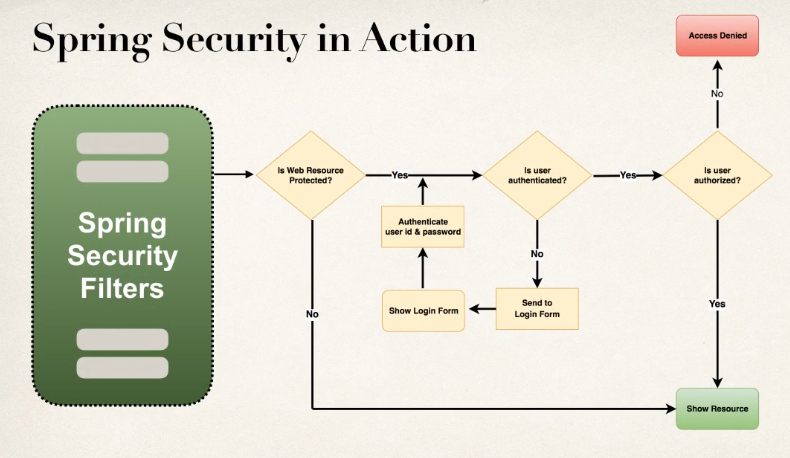
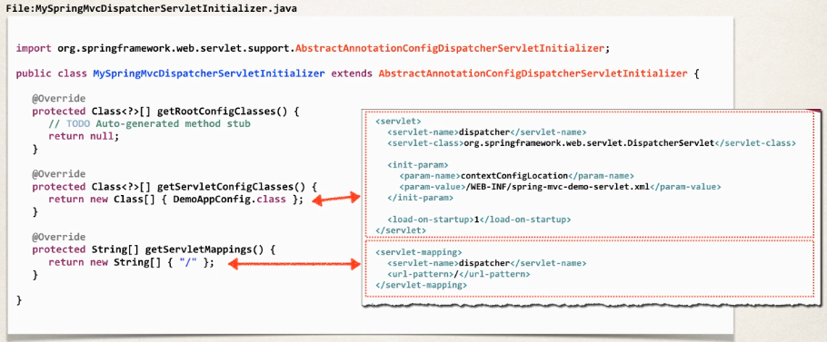
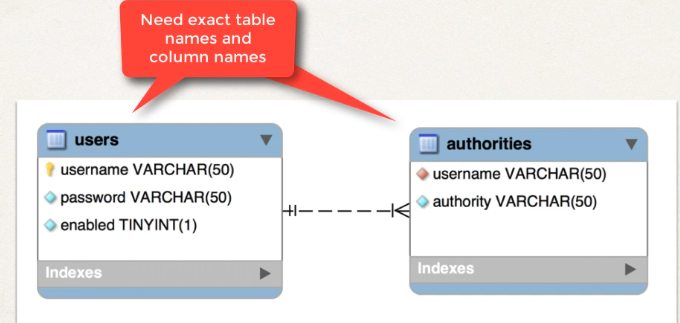

Spring Security
Overview
- Spring Security is implemented using Servlet filters in the background
- There are two methods of securing a Web App:
- Declarative
- Programmatic
Servlet Filters
Servlet filters are used to pre-process/post-process web requests.
- They can route web requests based on security logic.
- Spring provides a bulk of security functionality with servlet filters.
This is described in the following picture:

We can see Spring intercepts the request to /mytopsecretstuff and uses the app’s security configuration, alongside information about the user, passwords and roles to pre and post-process the request.
Spring Security in Action
Next we show a flowchart of the pre-processing made by Spring Security Filters:

- If the resource is protected we go to step (2), else we go to step (4)
- If the user is authenticated we go to step (3), else we go to step (6)
- If the user is authorized to access the resource we go to step (4), else we go to step (5)
- The resource is shown to the user
- The access to the resource is denied
- We send the user to the login page, if the user logins correctly we go to step (3)
Declarative Security
You define your application’s security constraints in configuration. For that, you can either:
- Use all Java configuration (@Configuration)
- Use a Spring configuration file (XML)
Programmatic Security
You can also do it programmatically:
- Spring Security provides an API for custom application coding.
- It also provides greater customization for specific apps.
Authentication/Authorization
Information about users/passwords/roles, etc can be stored:
- In-memory
- JDBC
- LDAP
- Custom
- etc
Maven Dependencies
To use this framework, you have to add the following dependency to your project:
<dependencies>
...
<!-- Spring Security -->
<!-- spring-security-web and spring-security-config -->
<dependency>
<groupId>org.springframework.security</groupId>
<artifactId>spring-security-web</artifactId>
<version>${springsecurity.version}</version>
</dependency>
...
<dependencies>Java Configuration
Web App Initializer
Spring MVC provides support for web app initialization, and makes sure your code is automatically detected. Your code is used to initialize the servlet container.
As an example:
package com.springsecurity.demo.config;
import org.springframework.web.servlet.support.AbstractAnnotationConfigDispatcherServletInitializer;
public class MySpringMvcDispatcherServletInitializer extends AbstractAnnotationConfigDispatcherServletInitializer {
@Override
protected Class<?>[] getRootConfigClasses() {
// TODO Auto-generated method stub
return null;
}
@Override
// Tell spring where the configuration for the servlet is
protected Class<?>[] getServletConfigClasses() {
return new Class[] { DemoAppConfig.class };
}
@Override
// Map the servlet to the path "/"
protected String[] getServletMappings() {
return new String[] { "/" };
}
}Here is the correspondence with the xml servlet configuration file:

Basic Security
Create Security Spring Initializer
Spring security provides support for security initialization. Your security code is used to initialize the servlet container. There is a special class to register the Spring Security Filters.
You need this class for the Spring Security Filters to “activate”. Next we show an example:
package com.springsecurity.demo.config;
import org.springframework.security.web.context.AbstractSecurityWebApplicationInitializer;
public class SecurityWebApplicationInitializer
extends AbstractSecurityWebApplicationInitializer {
}Create Spring Security Configuration (@Configuration)
Now we create our spring security configuration file:
package com.springsecurity.demo.config;
import org.springframework.context.annotation.Configuration;
import org.springframework.security.config.annotation.authentication.builders.AuthenticationManagerBuilder;
import org.springframework.security.config.annotation.web.builders.HttpSecurity;
import org.springframework.security.config.annotation.web.configuration.EnableWebSecurity;
import org.springframework.security.config.annotation.web.configuration.WebSecurityConfigurerAdapter;
import org.springframework.security.core.userdetails.User;
import org.springframework.security.core.userdetails.User.UserBuilder;
// Tell spring this is a configuration file
@Configuration
@EnableWebSecurity
public class DemoSecurityConfig extends WebSecurityConfigurerAdapter {
@Override
protected void configure(AuthenticationManagerBuilder auth) throws Exception {
// add our users for in memory authentication (this is for test purposes only, you would usually retrieve this information encrypted from the database)
UserBuilder users = User.withDefaultPasswordEncoder();
// Use the AuthenticationManagerBuilder given by Spring to handle authentication
auth
.inMemoryAuthentication()
.withUser(users.username("john").password("test123").roles("EMPLOYEE"))
.withUser(users.username("mary").password("test123").roles("MANAGER"))
.withUser(users.username("susan").password("test123").roles("ADMIN"));
}
}Custom Login Form
Create the form
We create the login page /showMyLoginPage as follows:
<!-- Reference the spring and jsp tags -->
<%@ taglib prefix="form" uri="http://www.springframework.org/tags/form" %>
<%@ taglib prefix="c" uri="http://java.sun.com/jsp/jstl/core" %>
<html>
<head>
<title>Custom Login Page</title>
<style>
.failed {
color: red;
}
</style>
</head>
<body>
<h3>My Custom Login Page</h3>
<!-- The form points to the endpoint specified preivously: "authenticateTheUser" -->
<!-- contextPath is the domain of our app, i.e. localhost:8080 -->
<form:form action="${pageContext.request.contextPath}/authenticateTheUser"
method="POST">
<!-- Check for login error -->
<c:if test="${param.error != null}">
<i class="failed">Sorry! You entered invalid username/password.</i>
</c:if>
<p>
User name: <input type="text" name="username" />
</p>
<p>
Password: <input type="password" name="password" />
</p>
<input type="submit" value="Login" />
</form:form>
</body>
</html>Note that Spring appends a parameter error when the user fails to login. That is what we use as a condition to show our error message, that is, we check if param.error exists.
Also, Spring security defines default names for login form fields:
- User name field:
username - Password field:
password
Login Controller
We also need a controller method for requests to /showMyLoginPage:
package com.springsecurity.demo.controller;
import org.springframework.stereotype.Controller;
import org.springframework.web.bind.annotation.GetMapping;
@Controller
public class LoginController {
@GetMapping("/showMyLoginPage")
public String showMyLoginPage() {
// This is the custom-login.jsp we created in the previous section
return "custom-login";
}
}Log Out
Configuration
To our existing configuration we add:
package com.springsecurity.demo.config;
import org.springframework.context.annotation.Configuration;
import org.springframework.security.config.annotation.authentication.builders.AuthenticationManagerBuilder;
import org.springframework.security.config.annotation.web.builders.HttpSecurity;
import org.springframework.security.config.annotation.web.configuration.EnableWebSecurity;
import org.springframework.security.config.annotation.web.configuration.WebSecurityConfigurerAdapter;
import org.springframework.security.core.userdetails.User;
import org.springframework.security.core.userdetails.User.UserBuilder;
@Configuration
@EnableWebSecurity
public class DemoSecurityConfig extends WebSecurityConfigurerAdapter {
@Override
protected void configure(AuthenticationManagerBuilder auth) throws Exception {
// add our users for in memory authentication
UserBuilder users = User.withDefaultPasswordEncoder();
auth.inMemoryAuthentication()
.withUser(users.username("john").password("test123").roles("EMPLOYEE"))
.withUser(users.username("mary").password("test123").roles("MANAGER"))
.withUser(users.username("susan").password("test123").roles("ADMIN"));
}
@Override
protected void configure(HttpSecurity http) throws Exception {
// Here is the control of the access to web path
http.authorizeRequests()
// Require authentication for every request
.anyRequest().authenticated()
.and()
.formLogin()
.loginPage("/showMyLoginPage")
.loginProcessingUrl("/authenticateTheUser")
.permitAll();
// Add logout functionality
.and()
.logout().permitAll()
}
}The default url for logging out is /logout.
Log Out Button
Now we create the logout button in our home page:
<%@ taglib prefix="form" uri="http://www.springframework.org/tags/form" %>
<html>
<head>
<title>luv2code Company Home Page</title>
</head>
<body>
<h2>luv2code Company Home Page</h2>
<hr>
<p>
Welcome to the luv2code company home page!
</p>
<!-- Add a logout button: it point to "/logout" endpoint -->
<form:form action="${pageContext.request.contextPath}/logout"
method="POST">
<input type="submit" value="Logout" />
</form:form>
</body>
</html>Note that the logout logic is handled directly by spring, what it does is:
- Invalidate the user’s HTTP session and remove cookies, etc.
- Sends the user back to the login page
- Appends a logout parameter:
?logout
Cross Site Request Forgery
How to see the CSRF token?
When your jsp with the <form:form> tag is processed into an html page, you will be able to see the token inside the form tag:

Display User and Roles
Add JSP Tag library as dependency
First we add to our pom.xml file the JSP Tag Library:
<!-- Add Spring Security Taglibs support -->
<dependency>
<groupId>org.springframework.security</groupId>
<artifactId>spring-security-taglibs</artifactId>
<version>${springsecurity.version}</version>
</dependency>JSP page
Then add the tag library to the jsp page, and we use its tags to access the user id and its role:
<%@ taglib prefix="form" uri="http://www.springframework.org/tags/form" %>
<!-- Add tag library -->
<%@ taglib prefix="security" uri="http://www.springframework.org/security/tags" %>
<html>
<head>
<title>luv2code Company Home Page</title>
</head>
<body>
<h2>luv2code Company Home Page</h2>
<hr>
<p>
Welcome to the luv2code company home page!
</p>
<hr>
<!-- display user name and role -->
<p>
User: <security:authentication property="principal.username" />
<br><br>
Role(s): <security:authentication property="principal.authorities" />
</p>
<hr>
<!-- Add a logout button -->
<form:form action="${pageContext.request.contextPath}/logout"
method="POST">
<input type="submit" value="Logout" />
</form:form>
</body>
</html>Authorization
Create Controllers
We create a basic controller for every endpoint:
package com.springsecurity.demo.controller;
import org.springframework.stereotype.Controller;
import org.springframework.web.bind.annotation.GetMapping;
@Controller
public class DemoController {
// add request mapping for index page
@GetMapping("/")
public String showHome() {
return "home";
}
// add request mapping for /leaders
@GetMapping("/leaders")
public String showLeaders() {
return "leaders";
}
// add request mapping for /systems
@GetMapping("/systems")
public String showSystems() {
return "systems";
}
}We also create a controller for the /acess-denied endpoint:
package com.springsecurity.demo.controller;
import org.springframework.stereotype.Controller;
import org.springframework.web.bind.annotation.GetMapping;
@Controller
public class LoginController {
@GetMapping("/showMyLoginPage")
public String showMyLoginPage() {
// return "plain-login";
return "fancy-login";
}
// add request mapping for /access-denied
@GetMapping("/access-denied")
public String showAccessDenied() {
return "access-denied";
}
}Define User Roles and Restrict Accessand Restrict Access
In our configuration file we had saved in-memory a list of users with some defined roles, we are going to update it to have more roles. We are also going to define the authorization scheme we showed earlier.
package com.springsecurity.demo.config;
import org.springframework.context.annotation.Configuration;
import org.springframework.security.config.annotation.authentication.builders.AuthenticationManagerBuilder;
import org.springframework.security.config.annotation.web.builders.HttpSecurity;
import org.springframework.security.config.annotation.web.configuration.EnableWebSecurity;
import org.springframework.security.config.annotation.web.configuration.WebSecurityConfigurerAdapter;
import org.springframework.security.core.userdetails.User;
import org.springframework.security.core.userdetails.User.UserBuilder;
@Configuration
@EnableWebSecurity
public class DemoSecurityConfig extends WebSecurityConfigurerAdapter {
@Override
protected void configure(AuthenticationManagerBuilder auth) throws Exception {
// add our users for in memory authentication
UserBuilder users = User.withDefaultPasswordEncoder();
// add more roles
auth.inMemoryAuthentication()
.withUser(users.username("john").password("test123").roles("EMPLOYEE"))
.withUser(users.username("mary").password("test123").roles("EMPLOYEE", "MANAGER"))
.withUser(users.username("susan").password("test123").roles("EMPLOYEE", "ADMIN"));
}
@Override
protected void configure(HttpSecurity http) throws Exception {
// Handle requests
http.authorizeRequests()
// Set role for index page
.antMatchers("/").hasRole("EMPLOYEE")
// Set role for leaders page
.antMatchers("/leaders/**").hasRole("MANAGER")
// Set role for systems page
.antMatchers("/systems/**").hasRole("ADMIN")
.and()
.formLogin()
.loginPage("/showMyLoginPage")
.loginProcessingUrl("/authenticateTheUser")
.permitAll()
.and()
.logout().permitAll()
// also define the page where the user is redirected if it does not have access to the resource it requests
.and()
.exceptionHandling().accessDeniedPage("/access-denied");
}
}Display Content based on Roles
In our home page, we add two conditionals so only managers can see the link to the leaders page, and only admins can see the link to the systems page:
<%@ taglib prefix="form" uri="http://www.springframework.org/tags/form" %>
<%@ taglib prefix="security" uri="http://www.springframework.org/security/tags" %>
<html>
<head>
<title>luv2code Company Home Page</title>
</head>
<body>
<h2>luv2code Company Home Page</h2>
<hr>
<p>
Welcome to the luv2code company home page!
</p>
<hr>
<!-- display user name and role -->
<p>
User: <security:authentication property="principal.username" />
<br><br>
Role(s): <security:authentication property="principal.authorities" />
</p>
<!-- Check if user has the manager role, if so show the link -->
<security:authorize access="hasRole('MANAGER')">
<!-- Add a link to point to /leaders ... this is for the managers -->
<p>
<a href="${pageContext.request.contextPath}/leaders">Leadership Meeting</a>
(Only for Manager peeps)
</p>
</security:authorize>
<!-- Check if user has the admin role, if so show the link -->
<security:authorize access="hasRole('ADMIN')">
<!-- Add a link to point to /systems ... this is for the admins -->
<p>
<a href="${pageContext.request.contextPath}/systems">IT Systems Meeting</a>
(Only for Admin peeps)
</p>
</security:authorize>
<hr>
<!-- Add a logout button -->
<form:form action="${pageContext.request.contextPath}/logout"
method="POST">
<input type="submit" value="Logout" />
</form:form>
</body>
</html>JDBC Database Authentication
Set Up Database
The tables we have to create are the following:

Password Encryption
In Spring Security 5, passwords are stored using a specific format:
{id}encodedPasswordThe id references the operation used to encrypt the password:
noop: plain text. So the password is stored as follows in the database:{noop}test123bcrypt: BCrypt password hashing. So the password is stored as follows in the database:{bcrypt}$2a$12$R9h/cIPz0gi.URNNX3kh2OPST9/PgBkqquzi.Ss7KIUgO2t0jWMUW- etc.
Add Dependiencies
We define the dependencies in our pom.xmlfile that are needed to add support to connect to databases:
<!-- Add MySQL and C3P0 support -->
<dependency>
<groupId>mysql</groupId>
<artifactId>mysql-connector-java</artifactId>
<version>8.0.16</version>
</dependency>
<dependency>
<groupId>com.mchange</groupId>
<artifactId>c3p0</artifactId>
<version>0.9.5.4</version>
</dependency>JDBC Properties files
Inside /src/main/resources we create the properties file persistence-mysql.properties for our database connections:
#
## JDBC connection properties
#
jdbc.driver=com.mysql.jdbc.Driver
jdbc.url=jdbc:mysql://localhost:3306/spring_security_demo_plaintext?useSSL=false
jdbc.user=springstudent
jdbc.password=springstudent
#
## Connection pool properties
#
connection.pool.initialPoolSize=5
connection.pool.minPoolSize=5
connection.pool.maxPoolSize=20
connection.pool.maxIdleTime=3000Spring Security Configuration
We have to modify our main configuration class, to include our database properties file and create the datasource
package com.luv2code.springsecurity.demo.config;
import java.beans.PropertyVetoException;
import java.util.logging.Logger;
import javax.sql.DataSource;
import org.springframework.beans.factory.annotation.Autowired;
import org.springframework.context.annotation.Bean;
import org.springframework.context.annotation.ComponentScan;
import org.springframework.context.annotation.Configuration;
import org.springframework.context.annotation.PropertySource;
import org.springframework.core.env.Environment;
import org.springframework.web.servlet.ViewResolver;
import org.springframework.web.servlet.config.annotation.EnableWebMvc;
import org.springframework.web.servlet.view.InternalResourceViewResolver;
import com.mchange.v2.c3p0.ComboPooledDataSource;
@Configuration
@EnableWebMvc
@ComponentScan(basePackages="com.luv2code.springsecurity.demo")
@PropertySource("classpath:persistence-mysql.properties")
public class DemoAppConfig {
// set up variable to hold the properties
@Autowired
private Environment env;
// set up a logger for diagnostics
private Logger logger = Logger.getLogger(getClass().getName());
// define a bean for ViewResolver
@Bean
public ViewResolver viewResolver() {
InternalResourceViewResolver viewResolver = new InternalResourceViewResolver();
viewResolver.setPrefix("/WEB-INF/view/");
viewResolver.setSuffix(".jsp");
return viewResolver;
}
// define a bean for our security datasource
@Bean
public DataSource securityDataSource() {
// create connection pool
ComboPooledDataSource securityDataSource
= new ComboPooledDataSource();
// set the jdbc driver class
try {
// Obtain driver from properties file
securityDataSource.setDriverClass(env.getProperty("jdbc.driver"));
} catch (PropertyVetoException exc) {
throw new RuntimeException(exc);
}
// Obtain database info from properties file
logger.info(">>> jdbc.url=" + env.getProperty("jdbc.url"));
logger.info(">>> jdbc.user=" + env.getProperty("jdbc.user"));
// set database connection props
securityDataSource.setJdbcUrl(env.getProperty("jdbc.url"));
securityDataSource.setUser(env.getProperty("jdbc.user"));
securityDataSource.setPassword(env.getProperty("jdbc.password"));
// set connection pool props
securityDataSource.setInitialPoolSize(
getIntProperty("connection.pool.initialPoolSize"));
securityDataSource.setMinPoolSize(
getIntProperty("connection.pool.minPoolSize"));
securityDataSource.setMaxPoolSize(
getIntProperty("connection.pool.maxPoolSize"));
securityDataSource.setMaxIdleTime(
getIntProperty("connection.pool.maxIdleTime"));
return securityDataSource;
}
// need a helper method
// read environment property and convert to int
private int getIntProperty(String propName) {
String propVal = env.getProperty(propName);
// now convert to int
int intPropVal = Integer.parseInt(propVal);
return intPropVal;
}
}Now in our security configuration we do two things:
- Inject the datasource we defined previouly that holds authentication information
- Tell Spring to use JDBC for authentication
package com.springsecurity.demo.config;
import javax.sql.DataSource;
import org.springframework.beans.factory.annotation.Autowired;
import org.springframework.context.annotation.Configuration;
import org.springframework.security.config.annotation.authentication.builders.AuthenticationManagerBuilder;
import org.springframework.security.config.annotation.web.builders.HttpSecurity;
import org.springframework.security.config.annotation.web.configuration.EnableWebSecurity;
import org.springframework.security.config.annotation.web.configuration.WebSecurityConfigurerAdapter;
import org.springframework.security.core.userdetails.User;
import org.springframework.security.core.userdetails.User.UserBuilder;
@Configuration
@EnableWebSecurity
public class DemoSecurityConfig extends WebSecurityConfigurerAdapter {
// add a reference to our security data source
@Autowired
private DataSource securityDataSource;
@Override
protected void configure(AuthenticationManagerBuilder auth) throws Exception {
// use jdbc authentication
auth.jdbcAuthentication().dataSource(securityDataSource);
}
@Override
protected void configure(HttpSecurity http) throws Exception {
http.authorizeRequests()
.antMatchers("/").hasRole("EMPLOYEE")
.antMatchers("/leaders/**").hasRole("MANAGER")
.antMatchers("/systems/**").hasRole("ADMIN")
.and()
.formLogin()
.loginPage("/showMyLoginPage")
.loginProcessingUrl("/authenticateTheUser")
.permitAll()
.and()
.logout().permitAll()
.and()
.exceptionHandling().accessDeniedPage("/access-denied");
}
}